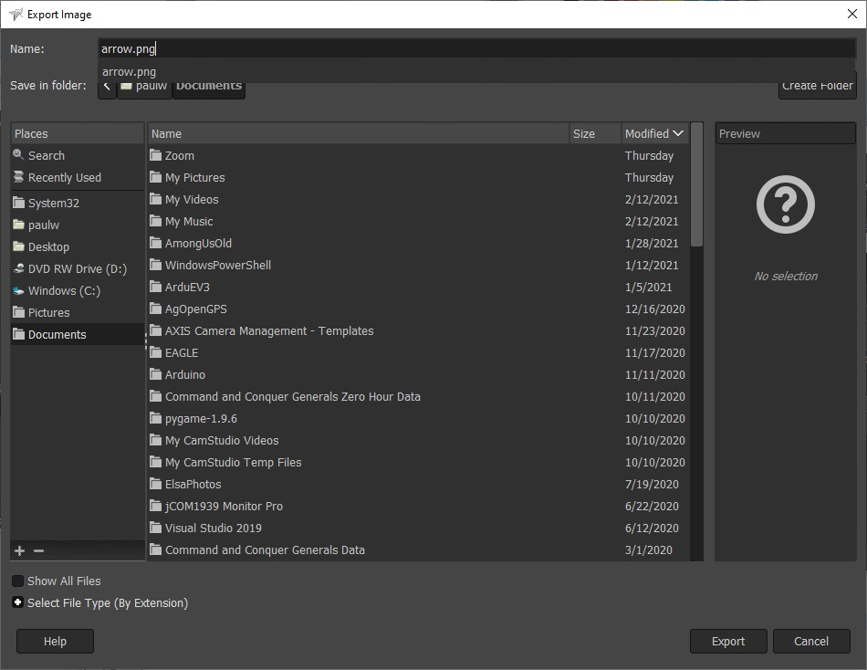

Make an image transparent using Gimp
Gimp is a free utility that can be downloaded from here
- Prepare the image by making the area you want to be transparent all the same color
- Open image file using Gimp
- Select Tools, By Color Select
- Click on the color that you want to be transparent (The area will be outlined)
- Select Colors, Color to Alpha, Ok (A checkered pattern will display)
- Select File, Export As
- Type in the name of the file (use .png)

- Click on export